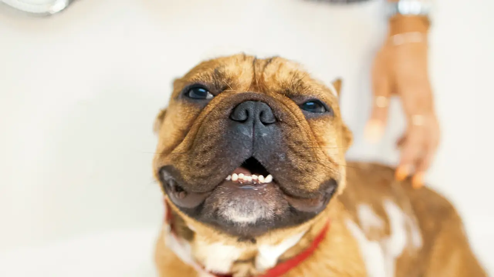

Canine Obedience Training

Learn practical techniques for teaching dogs obedience, good behaviour and positive responses to training.
Duration: Six Months
Fee: R1,500
View CoursePawsitive Pet Academy provides practical pet care education and training for people who want to develop their knowledge, confidence and skills in the pet care industry.
Based in Durban, we offer a range of programmes designed to help students build valuable skills while developing a deeper understanding of animals.

Whether you are interested in animal training, pet grooming, animal behaviour or general pet care, Pawsitive Pet Academy offers learning opportunities to help you develop your skills.
Our programmes combine practical knowledge with a caring approach to responsible pet ownership and professional development.
Learn practical techniques for teaching dogs obedience, good behaviour and positive responses to training.
Duration: Six Months
Fee: R1,500
View Course
Develop knowledge of pet grooming techniques, hygiene and general grooming care for animals.
Duration: Six Months
Fee: R1,500
View Course
Explore animal behaviour and learn how to better understand and respond to the behaviour of pets.
Duration: Six Months
Fee: R1,500
View CourseExplore our courses and find a programme that suits your interests and goals.
View All Courses